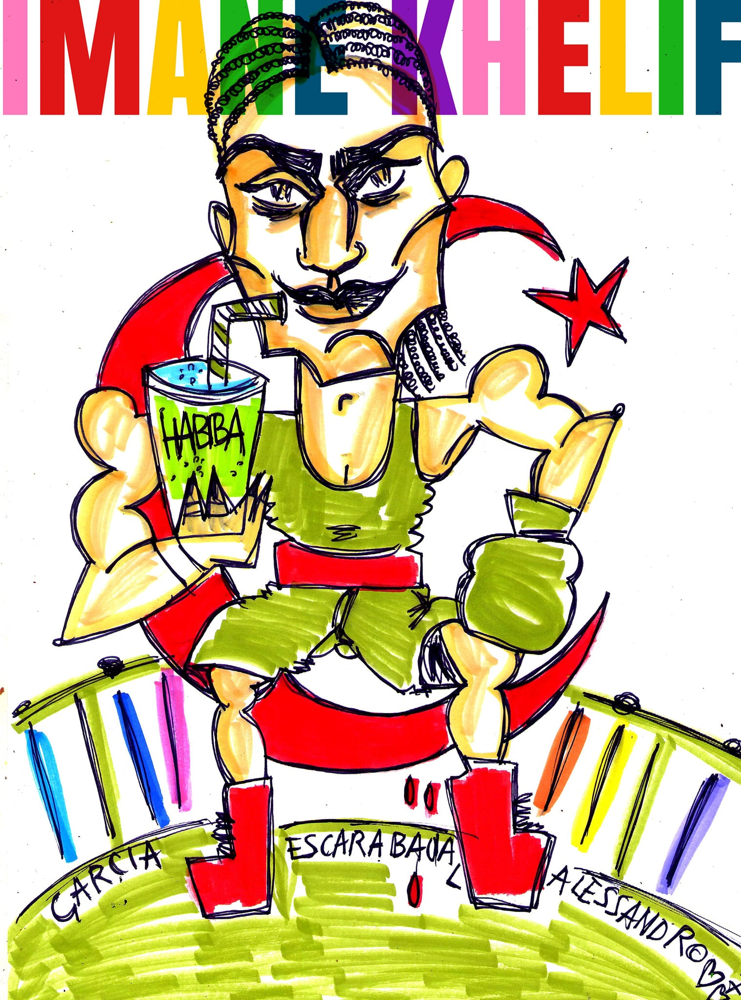

Le molte guerre combattute sul corpo di Imane Khelif

Il caos come sistema di potere. Statuti provvisori sulle donne e la boxe. I progressisti, i regressisti e le interessate polemiche della pubblica ottusità. Sport e parametri. Sessi e generi nella prospettiva islamica. Conflitti di potere sul corpo di una donna. L’Italia al tappeto.
La deliberata e sistematica produzione di caos sembra oggi essere la prassi più diffusa, tanto nelle guerre quanto nella comunicazione, ormai avvezze a scambiarsi continuamente di posto. L’incertezza è paradossalmente diventata una certezza della quale esiste misura e contabilità, e i conti in definitiva non sono complessi laddove per comprendere l’andazzo generale si può valutare l’interesse prevalente e chi più ci guadagna. Tale tipo di incertezza perlopiù non provoca interrogativi, ma piuttosto arriva a permettere a chiunque di affermare le proprie inappellabili certezze e anzi, maggiori sono le incertezze più impazzano le certezze, e c’è un appello generale, indipendentemente da quanto realmente se ne possa sapere di un qualcosa, a formulare illazioni su illazioni e a gettare merda su tutti.
Esemplare è il caso della pugile algerina Imane Khelif, categoria pesi leggeri, partecipante alle olimpiadi 2024, trattata peggio di un punching ball da un’opinione pubblica polarizzata senza scampo o mediazione in progressisti e regressisti, ambedue distanti dall’avere cognizione della sua effettiva condizione e parimenti interessati a manipolarla a favore delle proprie goffe e meschine credenze. La boxe, per quanto tradizionalmente non sia mai esattamente stata un’occupazione per signorine, rimane comunque la noble art, generalmente svolta da gente quantomeno svelta, anche quando riguarda donne che picchiano altre donne. E se nella sua carriera Imane le botte le ha date ma le ha pure prese senza riceverne troppe complicazioni, i cazzottoni della pubblica ottusità sono ignobili e sembrano rendere sempre più stupidi.
Ogni comprensione pone anche la questione dei criteri di giudizio su cui si fonda e quindi dei parametri di riferimento, e certamente lo sport ne ha di peculiari, laddove il suo principio è quello di superare i limiti. A complicare le cose, le stesse associazioni sportive ne applicano di diversi. Infatti, da parte loro, i protocolli CIO (Comité International Olympique) hanno soglie di accettabilità tali da convalidare negli atleti di ogni sesso livelli di allenamento che portano inevitabilmente ad alta produzione di testosterone, e inoltre un doping da overdose già è stato prassi. Invece, per quanto riguarda le analisi dell’IBA (International Boxing Association), che avrebbero riscontrato cromosomi sessuali XY nella pugile in occasione delle competizioni in Turchia del 2022 e in India del 2023, metodi e laboratori non sono stati nemmeno nominati, a quanto sembra sono stati richiesti dopo la sconfitta di una pugile russa, e contro la loro stessa autorità hanno prodotto effetti di esclusione soltanto parziali. Inoltre, alcuni referti degli ospedali di Parigi e Algeri dello stesso anno riferirebbero che la pugile sarebbe affetta di un disturbo chiamato insufficienza della 5-alfa, per essere quindi fornita, oltre che di cromosomi XY, di testicoli interni, e dove se l’utero sarebbe assente avremmo pure un micropene. Risulta però anche che tali rapporti sembrano ignorati dagli stessi medici ai quali sono attributi. Insomma, a rendere questo caso di infodemia particolarmente complicato è dove alla campagna di diffamazione si aggiunge il lavoro degli aggregatori di notizie. E il problema più grande è che è proprio questa immondizia ad attirare di più i consumatori compulsivi di informazioni.
Quanto va quindi considerato è che i parametri, oltre a essere variabili, possono essere in conflitto tra loro e derivare da altri conflitti più generali e spietati, che in questo caso sono marcatamente di carattere culturale e geopolitico. Di fatto, è netto il contrasto che coinvolge da una parte il CIO, che per una visione ultraliberista del diritto non effettua, come ricorda il portavoce Mark Adams, test sul DNA atti a rilevare il sesso dei partecipanti, e dell’altra l’IBA, peraltro attualmente bandito dall’organizzazione delle olimpiadi per problemi di governance e corruzione, sponsorizzata da Gazprom e controllata da Umar Kremlev, oligarca del Tagikistan vicino a Putin.
I parametri sono utili per definire la realtà, ed è necessario stabilirli con sempre maggiore accuratezza affinché si salvaguardi il senso della competizione sportiva e il modo adeguato per parteciparvi, ma certamente nessuno di tali parametri, che cambiano anche in ragione di quanto lo sport richieda prestazioni sempre più elevate, può sostituire una realtà che esiste di per sè, con tutte le sue infinite variazioni. Insomma, tale questione ha messo in risalto l’esistenza delle persone intersessuali, tra loro piuttosto diversificate. Senza ripercorrere le attenzioni che possono aver ricevuto da studiosi quali Foucault o la Butler, dobbiamo chiederci questo: occorre inventare per ognuno di loro una categoria peculiare, oppure riconoscere loro il genere nei cui confronti sviluppano la massima similiarità riscontrabile?
Nella generale incertezza, su questo specifico caso qualche informazione maggiormente riscontrabile di altre la abbiamo per davvero. Infatti, nonostante sembri avere peculiarità nella produzione ormonale e sia di aspetto mascolino, la venticinquenne, oltre oltre ad avere donna scritto sul passaporto e ad aver sempre vissuto da donna, non esprime una condizione transgender, non ha fatto nessuna transizione e nemmeno ne è lontanamente interessata. Probabilmente, neanche la ritiene possibile e altresì non ha alcun bisogno che qualcuno di una cultura che le è estranea e che non la interessa minimamente ne difenda qualche diritto o roba del genere. Probabilmente, è affetta dalla femminilissima sindrome dell’ovaio policistico, che colpisce tra l’8 e il 13 per cento delle donne determinando forme di iperandroginia.
Ad ogni modo, il dato decisivo, che sembra essere sfuggito a tutti, è che, per quanto sia stata fatta oggetto a livello personale da una psicosi mediatica da pesi massimi, la pugile si sottrae dai contenuti che la hanno investita e dalla loro stessa terminologia in qualità di donna musulmana ed esponente rilevante di un Paese musulmano. Paese che con la Francia che ospita le competizioni ha un rapporto problematico, del quale è segno anche il fatto che la donna non parla francese. E l’Algeria, che deve consolidare il proprio ruolo regionale e sedare i contrasti interni, ha preso senza riserve le parti della sua atleta che è già ambasciatrice UNICEF. Il supporto offerto a questo donna così chiacchierata è stato quindi formulato piena osservanza della sharia e delle indicazioni della scuola giuridica malikita, particolarmente adattabile alle contingenze per il ruolo che vi assume l’opinione individuale.
Per l’Islam i sessi sono diversi, distinti e complementari, la sessualità è creazione perpetuata e funzione sacra atta a permetterci di conoscerci a vicenda (Corano 4:1; 49:13). Secondo tale prospettiva, laddove sesso e genere indicano rispettivamente l’appartenenza biologica e la tipizzazione culturale, la mancata complementarietà e la mancata generazione vanno a determinare, piuttosto che fluidità, isolamento e chiusura. Se concetti tipo quelli di orientamento e la stessa omosessualità non sono neanche pensabili, le questioni di genere possono venir considerate in termini non remoti a pensatori occidentali quali Otto Weininger, per cui la polarità maschile e femminile ammette gradi intermedi e mantiene un ordine archetipico, e Ivan Illich, secondo il quale il genere completa il sesso per tendere a rapporti di complementarietà.
Nell’impazzare delle informazioni e degli interessi che le sono collegati, la realtà dei fatti continua a sfuggire anche dopo che la pugile algerina, dopo aver sconfitto in successione l’italiana Angela Carini (ritiratasi), l’ungherese Luca Hamori (che l’aveva insultata via social), la thailandese Janjaem Suwannapheng (che l’ha abbracciata insieme a tutto il suo staff) e quindi la cinese Yang Liu (rimasta in balia di un 5-0 netto), ha vinto l’oro in queste olimpiadi 2024, giocate sulla contrapposzione ideologica più becera. Resta incerto anche il perché la sua collega taiwanese Lin-Yu-Ting, a detta dell’IBA a sua volta caso controverso per quanto nemmeno lei mai ufficialmente appellata quale trans, se ne sia parlato molto meno e con toni decisamente meno violenti, ma è probabile che ciò dipenda dai Paesi coinvolti nelle competizioni sportive e dal loro livello di permeabilità alle polemiche e alle strumentalizzazioni. Questa realtà ha intrecciato conflitti di identità, cultura e civiltà sul corpo di Imane che, nel suo autodefinirsi «donna forte e con poteri speciali» ha sempre continuato a riconoscersi, senza troppe complicazioni, quale donna per quindi dedicare la sua stessa battaglia alle donne tutte, attraversando accuse e umiliazioni che hanno dato alla sua vittoria «un sapore speciale».
Tutto è molto complesso e incerto e il caos non ha risparmiato nessuno, indipendentemente da quanto ognuno della vicenda complessiva ne abbia compreso. Un branco ha inappellabilmente deciso che Imane sia un uomo, e lo ha fatto soltanto per odiare, e continuerà a farlo pure se si gli presentasse davanti nuda con le analisi del DNA stampate sull’hijab. Un altro branco non trova meglio da fare che accusare la Russia di questa epidemia di stronzate, perché la Russia è cattiva e loro sono buoni e vogliono tanto bene ai diversi, pure se nemmeno capiscono di cosa stanno parlando. Progressisti e regressisti sono schieramenti incomunicanti eppure interdipendenti di un logos sepolto, ombre che proiettano ombre senza vedere altro che la distorta proiezione di se stessi. Ad ogni modo, se questa epidemia ha un epicentro, per quanto abbia colpito eminenze quali Musk e la Rowling, questo è l’Italia, e se conosce un “paziente zero” questi è Salvini, almeno ufficialmente il primo a cadere su X in un equivoco che sembrerebbe comunque orchestrato altrove proprio per creare quel caos con cui oggi si pretende di controllare il mondo. E certamente anche ciò è piuttosto incerto. Indipendentemente da ogni dato possa venir prodotto e da ogni ragionamento compiuto possa venir articolato, tutte le incertezze restano sempre e comunque in piedi, sempre pronte ad essere smentite, per lasciare così ognuno in preda alla propria immaginazione ad alimentare, spesso suo malgrado, lo stesso caos che è costretto a subire.
Ad ogni modo, per quanto la situazione resti complessa, non ci vuole molto a capirne i significati più stringenti: l’equivoco chiamato occidente è ormai andato alla deriva insieme a tutte le sue tare pregresse e autoimmuni, ed è ormai palesemente incapace di distinguere, li guardi da destra o da sinistra, persino il cazzo dalla fica. Da parte sua, la rozza, pretenziosa e piagnucolosa italietta ha mostrato di sé davvero un brutto spettacolo su ogni ring e su ogni schermo, e non serve dilungarsi troppo ed entrare in dettagli; quanto resta è godersi il suo dissolversi, senza farsi coinvolgere più di tanto dai suoi equivoci. E della certezza della nostra incertezza rispetto al nostro Paese possiamo addirittura andarne fieri tutti, uomini e donne di ogni tipo, senza nemmeno più tanto bisogno di picchiarci. E magari verrà il tempo in cui anche per qualcuno di noi dignità e onore verranno prima di tutto.
Illustrazione: caricatura di Imane Khelif tratta dal suo profilo Facebook.